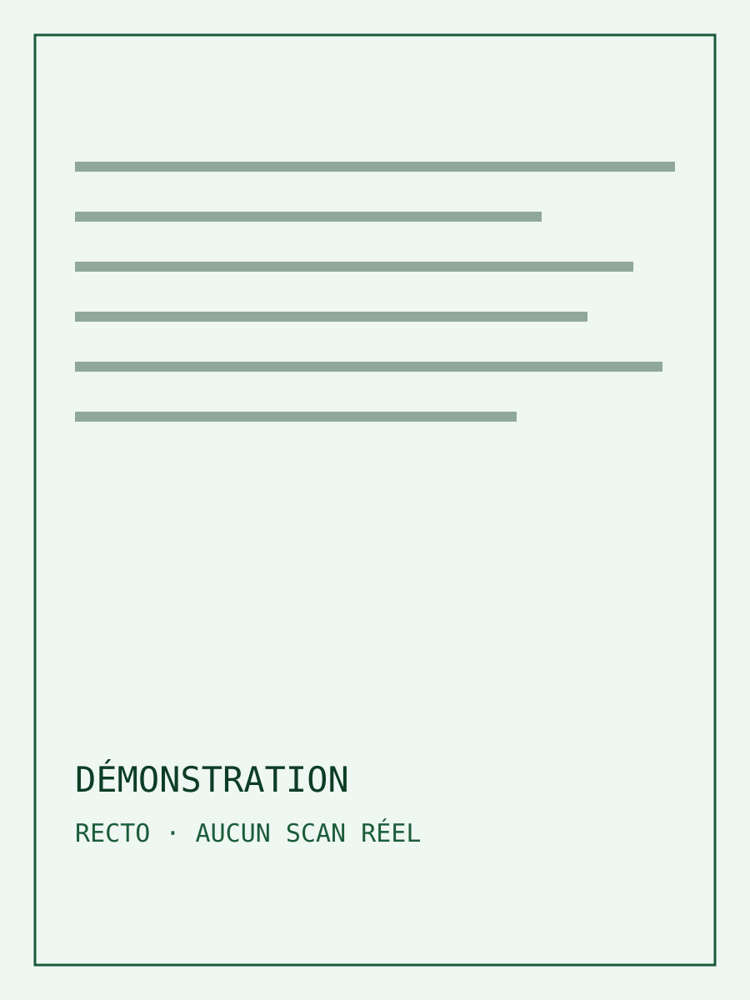
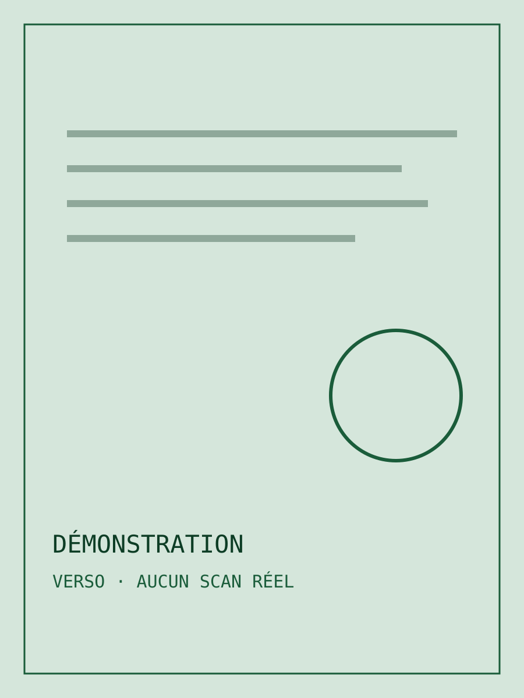
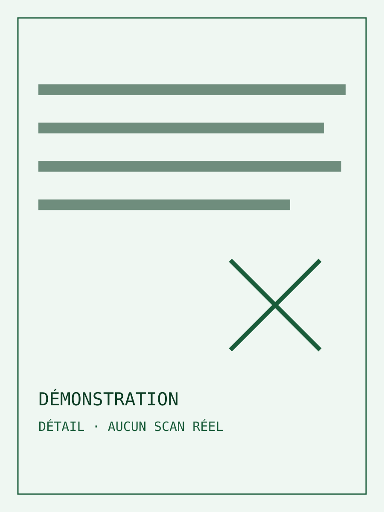

Fixture locale — aucun fonds réel
Démonstration — acte A
Cote témoin DEMO-A · date non renseignée
Publication · brouillon public
Identification · démonstration
Lecture · traduction en brouillon
Transcription originale
Français médiéval · transcription en brouillon
Emplacement de transcription de démonstration. Aucun texte d’archive n’est chargé.
Pourquoi ce passage est-il signalé ?
Ce repère sert uniquement à vérifier l’affichage d’une incertitude. Il ne correspond pas à une lecture historique.
Source : texte factice de contrôle d’interface · révision témoin demo-revision-001
Traduction proposée en français moderne
Français · traduction en brouillon
Emplacement de traduction proposée. Aucun contenu historique n’est interprété.
Source : traduction factice de contrôle d’interface
Images associées
3 vues témoins · aucune photographie réelle


Agrandir

Agrandir

Agrandir